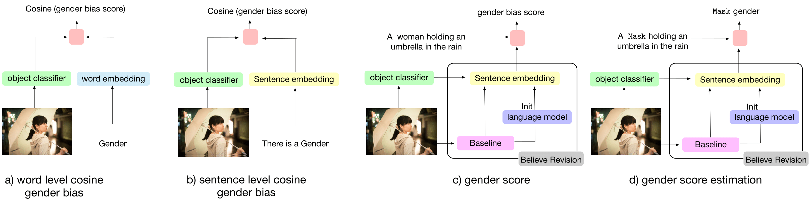
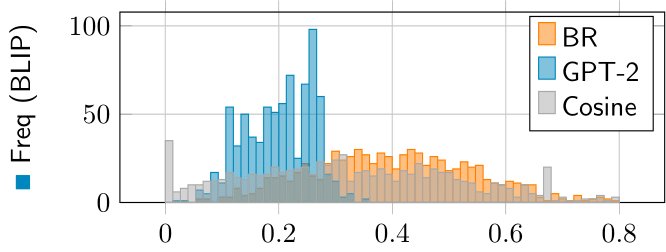
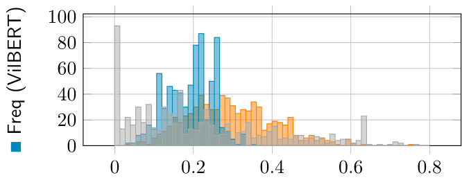
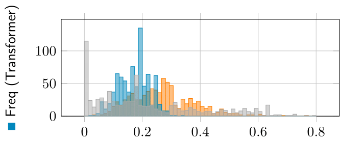
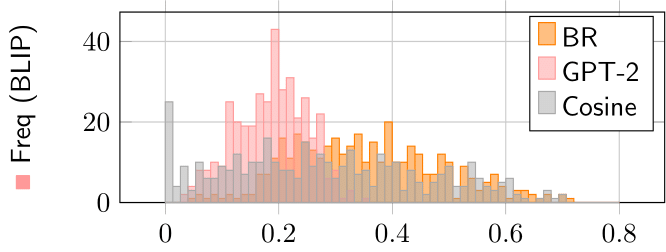
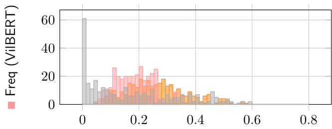
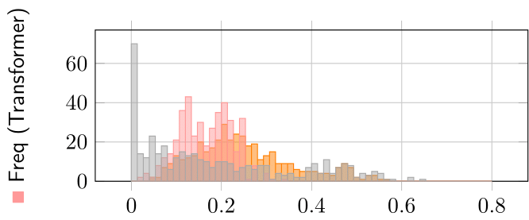

Women Wearing Lipstick: Measuring the Bias Between Object and Its Related Gender |
| Ahmed Sabir, Pranava Madhyastha, Lluís Padró |

|
|
|
|
In this paper, we investigate the impact of objects on gender bias in image caption systems. Our results show that only gender-specific objects have a strong gender bias (e.g., woman-lipstick). In addition, we present a visual semantic-based gender score that measures the degree of bias and can be used as a plug-in for any image captioning system. Our experiments demonstrate the utility of the gender score, since we observe that our score can measure the bias relation between a caption and its related gender better than the existing approach Object Gender Co-Occurrence.
Example of our proposed Gender score and Gender Score Estimation. The model uses the visual context to predict the gender and thus predict the object related bias. Also, inspired by Mask Language Model, the model can estimate the Mask gender using the object context in the sentence.
Visual ClassifierResNet/CLIP
visual_context_label = 'motor scooter'
visual_context_prob = 0.2183
a ____ riding amotorcycle on a road - man --> score
a ____ riding amotorcycle on a road - woman --> score
a MASK playing a video game in a living room (man/woman)
Comparison result on the test set of the Gender Score bias. (toward women ■ and men ■) between three different models in training dataset size BLIP 129M (unsupervised) and VilBERT 3.5M and Transformer 550K. Our proposed gender score ■ balance the amplified bias as the model getting bigger, the more amplified bias against man or woman.






Contact: Ahmed Sabir